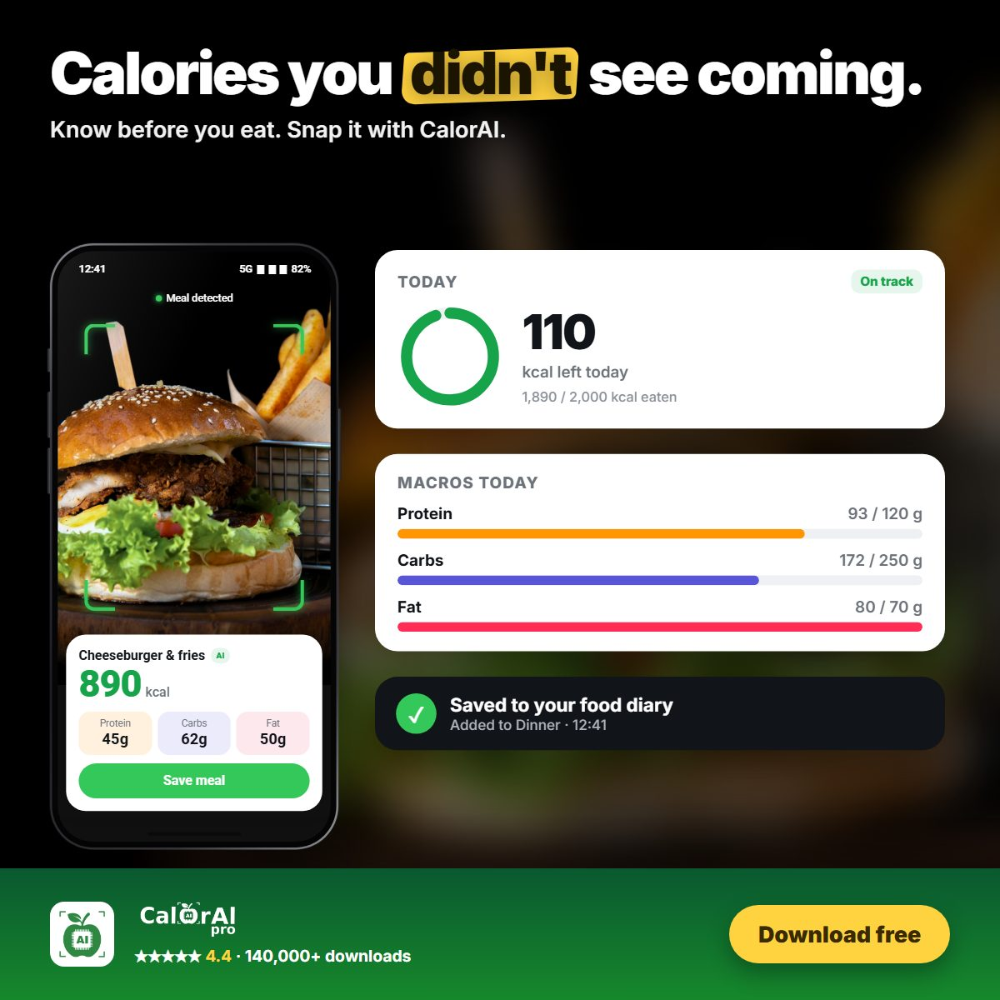

A burger with fries and a soft drink is one of the most common restaurant meals in the world. It is also one of the easiest to underestimate. Depending on the size of the patty, the cheese, the sauce and the side, the same "burger meal" can range from about 600 to well over 1,500 calories.
For context, the general daily reference value used on US nutrition labels is 2,000 calories a day[1]. One large burger meal can use up half or more of that.
Typical calories in a burger meal
The numbers below are typical ranges based on nutrient data for common fast-food items[2]. Exact values depend on the restaurant and the recipe, so always check the menu label where one exists.
| Item | Typical calories |
|---|---|
| Small single hamburger | 250–300 kcal |
| Cheeseburger, single patty | 300–400 kcal |
| Double cheeseburger or large "signature" burger | 500–900+ kcal |
| Bacon, extra cheese or special sauce | +80–200 kcal |
| Medium fries | about 320–400 kcal |
| Large fries | about 450–550 kcal |
| Medium regular soft drink | about 200–250 kcal |
Add a large burger, large fries and a regular soda together and you can easily reach 1,100–1,400 calories in one meal.
Why we underestimate burger calories
A study of fast-food customers published in the BMJ asked adults, adolescents and parents to estimate the calories in the meals they had just bought. Most people underestimated, and the bigger the meal, the bigger the error. Around two thirds of participants underestimated the calories in their meal, and for large meals the gap was often several hundred calories[3].
There are a few reasons this happens:
- Hidden fat. Sauces, butter on the bun and frying oil add a lot of calories you cannot see.
- Size creep. "Medium" and "large" are not standard sizes. A large at one restaurant may be twice a large at another.
- Drinks don't feel like food. A soft drink can add 200+ calories without making you feel fuller.
- Mental shortcuts. We judge a meal as one item ("a burger") instead of adding up each part.
Menu labels help, but only where they exist
In the United States, restaurant chains with 20 or more locations must show calorie information on menus and menu boards[4]. That is useful, but it does not cover independent restaurants, food trucks, home-cooked meals or most places outside the US. It also only helps if you read it before ordering.

How to keep a burger meal under control
- Choose a single patty instead of a double. This alone can save 200–300 calories.
- Swap or shrink the side. A small fries or a side salad instead of large fries saves 200+ calories.
- Pick a zero-calorie drink: water, sparkling water or a diet soda.
- Go easy on sauces and bacon. They add calories quickly without adding much fullness.
- Balance the rest of the day. One big meal is fine if you know about it and adjust your other meals.
Count it in seconds instead of guessing
The research is clear that our eyes are not good calorie counters, especially for large meals. That is why CalorAI lets you take a photo of your meal and uses AI to recognise the food, estimate the portion and calculate calories, protein, carbs and fat. You see the result in a few seconds, together with how much of your daily target is left.
If you are over your target, CalorAI shows it clearly, so you can make a better choice for your next meal instead of finding out at the end of the week.
Know the calories before the first bite
Snap your meal and CalorAI shows calories, protein, carbs and fat in seconds.
Sources
- U.S. Food and Drug Administration. "Daily Value on the Nutrition and Supplement Facts Labels." fda.gov
- U.S. Department of Agriculture, Agricultural Research Service. "FoodData Central." fdc.nal.usda.gov
- Block JP, Condon SK, Kleinman K, et al. "Consumers' estimation of calorie content at fast food restaurants: cross sectional observational study." BMJ. 2013;346:f2907. doi.org/10.1136/bmj.f2907
- U.S. Food and Drug Administration. "Calorie Labeling on Restaurant Menus and Menu Boards." fda.gov
This article is for general information and is not medical advice. Talk to a doctor or registered dietitian before making major changes to your diet, especially if you have a medical condition, allergy, or are pregnant.